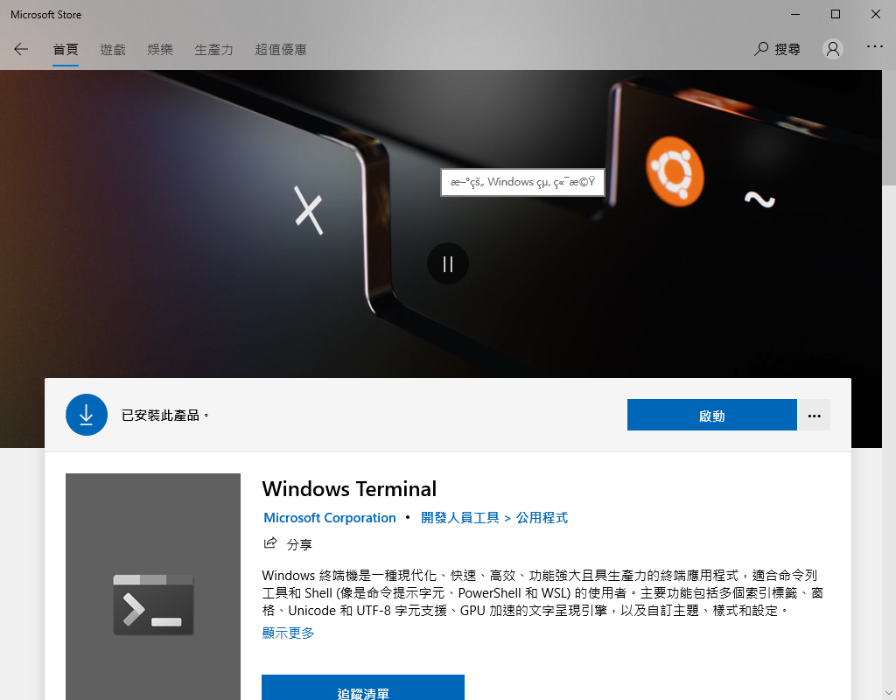

# 告別 PowerShell 與 CMD，擁抱 Windows Terminal (包括自訂樣式)
# 睽違了如此多年，Windows 終於在 Terminal 上注意到使用者了
在文章開始之前，我們先來看看 Windows Terminal 的工商廣告，傳傳教吧～
以往提到 Windows 的 Terminal ，大家的印象都是這樣
或是這樣
比起隔壁棚 (MaxOS) 有強大的 iTerm2 可以客製化自己的佈景主題、使用熱鍵、字體大小、文字主題… 等。Windows 的簡直 like a sh_t 。
因此，在得知 windows 要推出新的 terminal 讓人著實非常期待。
Windows Terminal 是一種現代化、快速、高效、功能強大且具生產力的終端應用程式，適合命令列工具和 Shell (像是命令提示字元、PowerShell 和 WSL) 的使用者。主要功能包括多個索引標籤、窗格、Unicode 和 UTF-8 字元支援、GPU 加速的文字呈現引擎，以及自訂主題、樣式和設定。
本篇將講述如何安裝 Windows Terminal 以及自訂 Windows Terminal 的樣式。
# 安裝
Windows 安裝東西都很簡單，打開 Microsoft store ，找尋 Windows Terminal ，安裝即可。

剛安裝完的時候會長成這樣原始的樣子。但是已經整合了 OS 中擁有的 Terminal。
# 個人化佈景主題
先上結論，以下是我目前調整完後的樣式，個人非常地滿意。
首先我們選取「設定」開啟位於 C:\Users\your-user\AppData\Local\Packages\Microsoft.WindowsTerminal_8wekyb3d8bbwe\LocalState 中的 settings.json 。
找到 profiles 區域，我們可以看到分為 default 與 list 兩處。
default 用來存放全域設定，如果你有一些設定想要 apply 到所有類型的 Terminal ，就將這些設定寫在 default。
list 的部分用來分別對特定 Terminal 的進行個人化設定
布景配色可以上這個網站找尋，裡面有大量的 Windows Terminal 色彩配置，可以任君挑選。
Windows Terminal Themes
Browse and copy hundreds of themes for Windows Terminal windowsterminalthemes.dev
選好喜歡的主題後點選 Get theme 複製主題的 Json，貼在 profiles 中的 schemas 處。
然後在 colorScheme 設定想要的主題名稱。
你也可以使用 backgroundImage 設定自己的背景照片與 Icon 圖片。
這邊講解一下我有使用到的參數所代表的意義。
colorScheme: 佈景主題名稱
acrylicOpacity: 壓克力效果的透明度 (0~1)
backgroundImage: 背景圖片的路徑
backgroundImageOpacity: 背景圖片的透明度
useAcrylic: 是否開啟壓克力效果(true/false)這邊必須開啟才能使用
基本上這樣就設定完成了。
我們就可以來享受自己修改後的成果啦～！!
您的鼓勵是我持續分享的動力。
如果覺得這篇文章有幫助的話，請不吝給予一點鼓勵吧～